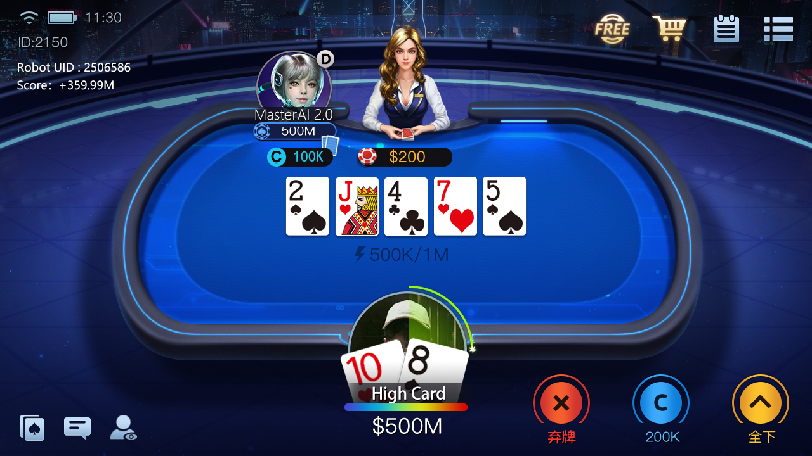
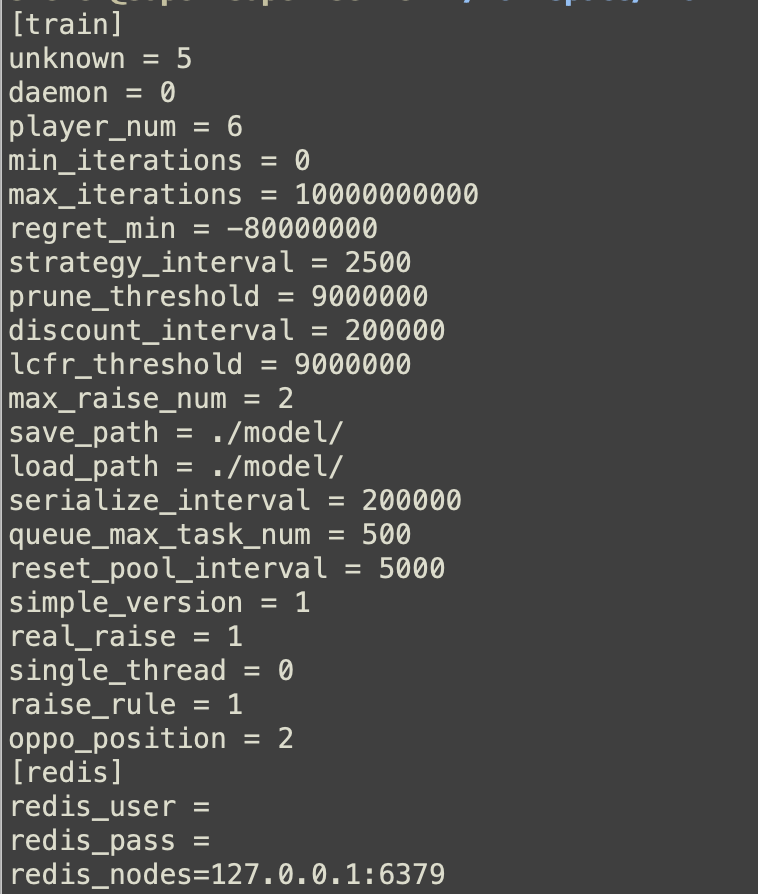

01 · 規則
完整 HUNL 狀態模型
52 張牌、四輪下注、盲注、終局收益、牌型評估，以及棄牌到全押的動作抽象。
由公開原始碼驗證的研究框架：CFR 子博弈、ReBeL 風格遞迴求解、反事實價值學習、自我博弈與 C++ 蒙地卡羅元件。

每項能力都能對應到倉庫模組；不再使用無法證明的辨識率、回應速度、獲利提升、平台適配或一鍵安裝宣傳。
52 張牌、四輪下注、盲注、終局收益、牌型評估，以及棄牌到全押的動作抽象。
遺憾更新、平均策略、到達機率、最佳回應、期望值與可利用度相關工具。
由公共狀態展開子博弈，依行動更新雙方私牌信念，並在後續狀態繼續求解。
使用 PyTorch 對截斷葉節點估值，支援價值與策略學習實驗。
多程序樣本生成、模型同步、回放緩衝、訓練批次與驗證流程。
原生模擬器、Python 牌型工具與綁定基礎，補充 Python 演算法層。
引擎涵蓋翻牌前、翻牌、轉牌與河牌。公共狀態記錄公共牌、累計下注、目前行動者、可行動作與加注次數。
遊戲引擎產生合法行動、後繼狀態、終局與手牌收益。
迭代更新即時遺憾與平均策略，配置後可由價值網路估計葉節點。
反事實價值與策略樣本經回放系統進入 PyTorch 模型。
圖片顯示訓練迭代、遺憾設定、剪枝、模型路徑與 Redis 連線；它是訓練配置/終端畫面，不是線上牌桌辨識介面。

圖片展示機器人席位與牌桌呈現，但不能證明 OCR、自動操作或第三方平台整合，因此頁面不會作出這些聲明。
用於合法研究、教育、離線訓練與基準測試。請勿用於未獲許可的線上即時決策、自動操作、規避平台規則或破壞公平性的行為。